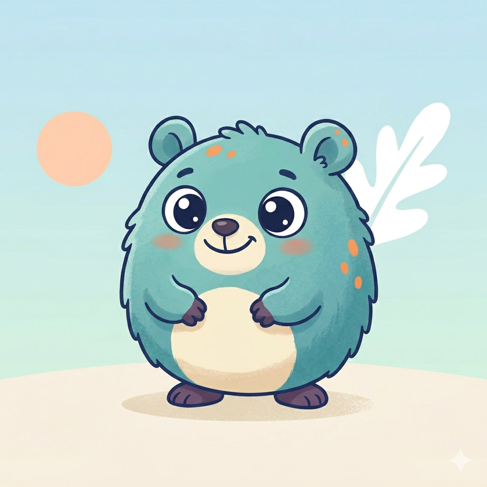
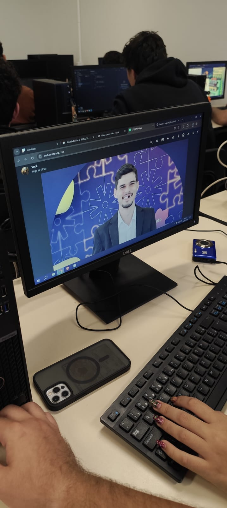

<html>
    <head>
        <meta charset="UTF-8">
        <title>Meu Pet Virtual</title>
        <link rel="stylesheet" href="style.css">
        <link href="https://cdn.jsdelivr.net/npm/daisyui@5" rel="stylesheet" type="text/css" />
        <script src="https://cdn.jsdelivr.net/npm/@tailwindcss/browser@4"></script> 
    </head>
<body id="body" style="background-image: url('bg.png');" class="min-h-screen flex flex-col items-center justify-center"></body>
<div class="flex flex-col items-center justify-center w-full px-4">

    

    
    <div class="mt-12 flex justify-center w-full">

      

    </div>
    <body class="bg-pink-50 min-h-screen flex flex-col items-center justify-center">
  <div class="w-full flex items-center fixed bottom-4 left-4">

    <div class="avatar">
      <div class="w-25 rounded-full ring ring-primary ring-offset-base-100 ring-offset-2">
        
      </div>
    </div>

    <input 
      type="text" 
      placeholder="Nome da criatura..." 
      class="input input-secondary">

  </div>

<button 
  id="secretBtn"
  onclick="mostrarFerlini()"
  class="fixed top-2 right-2 w-8 h-8 bg-pink-400 text-white rounded-full shadow-md text-xs z-50">
  👀
</button>

<!-- Imagem escondida -->


  <div class="fixed bottom-4 right-4">
  <label class="flex cursor-pointer gap-2 bg-base-200 p-2 rounded-full shadow-lg">
    
    <!-- Sol -->
    <svg xmlns="http://www.w3.org/2000/svg" width="20" height="20" fill="none" stroke="currentColor" stroke-width="2">
      <circle cx="12" cy="12" r="5"/>
      <path d="M12 1v2M12 21v2M4.2 4.2l1.4 1.4M18.4 18.4l1.4 1.4M1 12h2M21 12h2M4.2 19.8l1.4-1.4M18.4 5.6l1.4-1.4"/>
    </svg>

    <!-- Toggle -->
    <input type="checkbox" value="synthwave" class="toggle theme-controller" />

    <!-- Lua -->
    <svg xmlns="http://www.w3.org/2000/svg" width="20" height="20" fill="none" stroke="currentColor" stroke-width="2">
      <path d="M21 12.79A9 9 0 1 1 11.21 3 7 7 0 0 0 21 12.79z"/>
    </svg>

  </label>
</div>
    </body>

    <script src="script.js"></script>
</html>